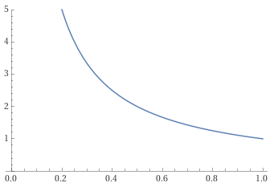

Understanding entropy
Table of Contents
1. Introduction
Some days ago I watched a talk by Christopher Domas titled The future of RE: Dynamic Binary Visualization (YouTube). It showed a tool he made for visualizing various kinds of information in a binary. I was instantly intrigued by this, so I decided to check some of the other resources he mentioned in the talk. One of these resources was another talk by Greg Conti and Sergey Bratus titled Voyage of the Reverser: A Visual Study of Binary Species (YouTube). Another person that was mentioned in the first talk was Aldo Cortesi. I looked through his blog and found various good articles like Visualizing binaries with space-filling curves and Visualizing entropy in binary files.
After watching those talks and reading those articles, I decided to make my own tool for generating PNG images based on binary information, similar to the ones used on those two talks. After adding various kinds of graphs, I decided to add one for visualizing the entropy. This is specially useful for reverse engineering, since compressed or encrypted regions usually have a higher entropy.
However, I wanted to make sure I understood what entropy is, and how it’s calculated.
2. What is entropy?
Entropy refers to the average level of information or surprise in a set of values.
For example, the list of bytes 12 12 12 12 has lower entropy than A1 00 B7
12. From now on, the term message will be used to refer to each one of those
elements of the list (in this case each byte).
To determine how informative a message is, we need to know how likely it is. Messages with a higher probability are less informative, and messages with a lower probability are more informative. I think this example from Wikipedia is very good:
The knowledge that some particular number will not be the winning number of a lottery provides very little information, because any particular chosen number will almost certainly not win. However, knowledge that a particular number will win a lottery has high informational value because it communicates the occurrence of a very low probability event.
Another example that is normally used when talking about entropy is a coin flip. If the probability of a coin flip resulting in either heads or tails is 50%, its entropy is very high because, since all of its outcomes have the same probability, each throw will be very informative/surprising. However, if the coin had a 100% chance of resulting in heads, the entropy will be zero because each throw has no “informational value”.
The “informational value” of each possible message (e.g. getting heads) is somewhat inversely proportional to its probability. As you can see, the entropy is also related to how distributed the probabilities of each possible message are.
This YouTube video has very good and simple explanations on entropy, and I will be using some of its examples in this article.
3. Calculating entropy
I will start by showing the formula for calculating entropy (\(H\)) according to what Claude Shannon wrote in his 1948 paper.
\begin{equation*} H(X) = - \sum_{x \in \mathcal{X}} p(x) \log_2(p(x)) \end{equation*}Where \(X\) is a discrete random variable, which takes values (i.e. messages) in the set \(\mathcal{X}\). The probability of each message is represented with \(p(x)\).
As I explained in the introduction, my motivation for learning about entropy was measuring “randomness” in a list of bytes. In this example:
- The discrete random variable \(X\) would be the list of bytes itself (e.g.
A1 00 B7 12). - The set \(\mathcal{X}\) would be the possible range of each byte (i.e. \([0..255]\)). Each byte in \(X\) must belong to set \(\mathcal{X}\).
- The probability of each byte would be number of occurrences of that byte
divided by the total number of bytes. For example, if the input is
41 41 AB 41, the probability of “randomly encountering” the byte41is \(3/4=0.75\).
The code for this example (calculating the entropy of a list of bytes) will be shown below, in case you are more familiar with that.
I will try to explain each part of the formula as clearly as possible, in a way that could have helped me when I was trying to learn about this.
3.1. Informational value
As I said, the entropy can be defined as the average level of information in a set of messages. I also mentioned that the “informational value” of a possible message is somewhat inversely proportional to the probability of that message. Let’s look at how this is really calculated.
When calculating each surprise/informational value, it’s tempting to just use the inverse of the probability of the message:
\begin{equation*} \frac{1}{p(x)} \end{equation*}Let’s go back to the coin flip example. If our coin always results in heads, its probability is 1, and therefore the “surprise” should be zero. However, \(\frac{1}{1}\) is 1.
This is one (but not the only) reason why the logarithm is used:
\begin{equation*} \log \left( \frac{1}{p(x)} \right) \end{equation*}Which can be simplified into:
\begin{equation*} \log(1) - \log(p(x)) = - \log(p(x)) \end{equation*}This is how the two plots compare.

The base of the logarithm doesn’t usually matter but, since we are talking about bits and coin flips, I will use base 2.
Now the “surprise” of getting heads will be 0, and and the “surprise” for getting tails will be undefined. It makes sense that the surprise is undefined when the probability is 0 because we should not be quantifying something that will never happen.
\begin{align*} \text{surprise}(\text{Heads}) &= \log_2 \left( \frac{1}{p(\text{Heads})} \right) = \log_2 \left( \frac{1}{1} \right) = \log_2 \left( 1 \right) = 0 \\ \text{surprise}(\text{Tails}) &= \log_2 \left( \frac{1}{p(\text{Tails})} \right) = \log_2 \left( \frac{1}{0} \right) = \text{Undefined} \end{align*}| Message | Probability | Surprise |
|---|---|---|
| Heads | 1.0 | 0.0 |
| Tails | 0.0 | Undefined |
Let’s look at another coin flip example where the probability of getting tails is not zero. Imagine the probability of the coin flip resulting in heads is 0.7 and the probability of tails is 0.3. Note how the division is converted into subtraction using the properties of logarithms.
\begin{align*} \text{surprise}(\text{Heads}) &= \log_2 \left( \frac{1}{p(\text{Heads})} \right) = \log_2 \left( \frac{1}{0.7} \right) = \log_2(1) - \log_2(0.7) \approx 0.51 \\ \text{surprise}(\text{Tails}) &= \log_2 \left( \frac{1}{p(\text{Tails})} \right) = \log_2 \left( \frac{1}{0.3} \right) = \log_2(1) - \log_2(0.3) \approx 1.73 \\ \end{align*}| Message | Probability | Surprise |
|---|---|---|
| Heads | 0.7 | 0.51 |
| Tails | 0.3 | 1.73 |
Note how the entropy/surprise never depends on the messages themselves (i.e. coin results, byte values, etc.), it only depends on the probability of each message, \(p(x)\). As I mentioned before in the byte list example, the probability of encountering each byte would depend on the number of occurrences of that byte in the input set, relative to the total number of bytes.
3.2. Averaging the “informational values”
Now that we have a way of calculating the “informational value” of each possible message, it seems like we just need to average all of these. Assuming \(N\) is the total number of messages, it might seem logical to do something like:
\begin{equation*} H'(X) = \frac{ - \sum \log(p(x)) }{N} \end{equation*}Using this formula in the last coin flip example, with probabilities of 0.7 and 0.3, the result would be approximately 1.12, which is not accurate.
Let’s take a look at the actual paper from Claude Shannon1.
For each possible state \(i\) there will be a set of probabilities \(p_i(j)\) of producing the various possible symbols \(j\). Thus there is an entropy \(H_i\) for each state. The entropy of the source will be defined as the average of these \(H_i\) weighted in accordance with the probability of occurrence of the states in question.
Just to be clear, let me compare Shannon’s terms to the ones we have been using until now: \(i\) would be each element of the set \(\mathcal{X}\), \(p_i(j)\) would be \(p(x)\), \(j\) would be \(x\), and \(H_i\) is what we calculated in the previous section. Shannon also uses the term “symbol”, rather than “message”.
The important part is that each “informational value” or state entropy must be weighted according to its probability. We can accomplish this by multiplying each state entropy by its probability. With this, we get the entropy formula shown above.
\begin{equation*} H(X) = - \sum_{x \in \mathcal{X}} p(x) \log_2(p(x)) \end{equation*}Or alternatively, removing the negation:
\begin{equation*} H(X) = \sum_{x \in \mathcal{X}} p(x) \log_2 \left( \frac{1}{p(x)} \right) \end{equation*}We can expand this formula with the last coin flip example.
\begin{align*} H(\text{BiasedCoin}) &= \sum_{x \in \mathcal{X}} p(x) \log_2{\frac{1}{p(x)}} \\ &= p(\text{Heads}) \times \log_2(\frac{1}{p(\text{Heads})}) + p(\text{Tails}) \times \log_2(\frac{1}{p(\text{Tails})}) \\ &= 0.7 \times \log_2(\frac{1}{0.7}) + 0.3 \times \log_2(\frac{1}{0.3}) \\ &= 0.7 \times (\log_2(1) - \log_2(0.7)) + 0.3 \times (\log_2(1) - \log_2(0.3)) \\ &\approx 0.36 + 0.52 \\ &\approx 0.88 \end{align*}That is the correct entropy for our biased coin.
4. Entropy range
I wanted to briefly mention what determines the range of this entropy value.
The possible range for the entropy of \(X\) depends on the maximum number of possible distinct messages in the input. In other words, on the number of elements in the set \(\mathcal{X}\). Specifically, it’s the logarithm of this number, and its base depends on the one used when calculating the entropy.
For example, assuming \(\log_2\) is used, the entropy of a list of bytes will always be in the \([0..8]\) range, since the elements of \(\mathcal{X}\) are \([0..255]\), and \(\log_2(256) = 8\).
If you are having trouble understanding this, it might help to look at the entropy formula when \(N\) messages have the same \(\frac{1}{N}\) probability (e.g. a coin or dice).
\begin{equation*} -N \times \frac{1}{N} \times \log_2 \left( \frac{1}{N} \right) = - \log_2 \left( \frac{1}{N} \right) \end{equation*}5. Calculating from code
Naturally, the calculations from the previous sections can be implemented as code, enabling us to use it in our programs.
The following C function calculates the entropy of an array of bytes. Specifically, it receives a pointer to an array of bytes, along with the size of the array, and returns its entropy (in the \([0..8]\) range, as described above). In order to avoid cluttering the code with comments, each step will be described here:
- The function declares an array of occurrences, and initializes each element to zero. The array has 256 elements (i.e. counters), one for each possible value in the input array.
- The array is iterated, and for each element, the number of occurrences of that value is increased.
- The
occurrencesarray is iterated.- If the current counter is zero, there were no occurrences of that byte, so it is ignored.
- Otherwise, it divides the number of occurrences of the current byte by the total number of input bytes. In other words, it calculates the probability of encountering that byte in the input array.
- The probability is multiplied by its base 2 logarithm to obtain the
“informational value” of the current byte. Since the
probabilityvariable is in the \([0..1]\) range, and its logarithm is always \(\le 0\), the result is accumulated by subtracting it into theresultvariable.
- The final result is obtained, which contains the sum of all “informational values” in the input. In other words, the entropy.
/* * NOTE: Remember to link with -lm */ #include <stddef.h> /* size_t */ #include <stdint.h> /* uint8_t */ #include <math.h> /* log2() */ double entropy(const uint8_t* data, size_t data_sz) { /* Step 1 */ int occurrences[256]; for (int i = 0; i < 256; i++) occurrences[i] = 0; /* Step 2 */ for (size_t i = 0; i < data_sz; i++) { const uint8_t byte = data[i]; occurrences[byte]++; } /* Step 3 */ double result = 0.0; for (int byte = 0; byte < 256; byte++) { /* Step 3.1 */ if (occurrences[byte] == 0) continue; /* Step 3.2 */ const double probability = (double)occurrences[byte] / data_sz; /* Step 3.3 */ result -= probability * log2(probability); } /* Step 4 */ return result; }
6. Final note
As I mentioned in many other articles, I am not an expert on this subject. I had a motivation for learning about entropy, and I decided to document my progress in case it could help someone. If you feel like some explanations could be improved, feel free to contribute.
Footnotes:
Claude Shannon. A Mathematical Theory of Communication. 1948. Section 7.